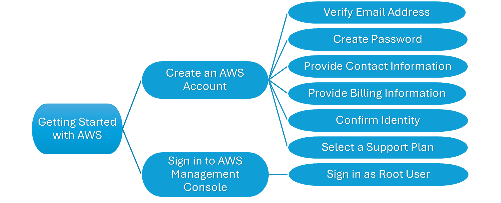
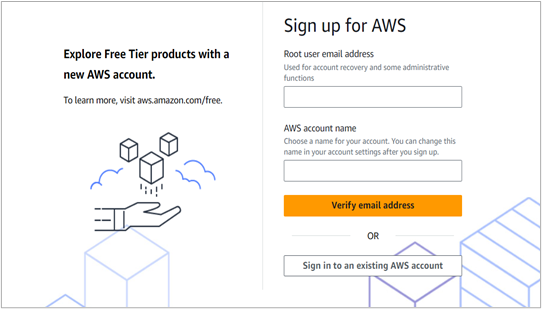
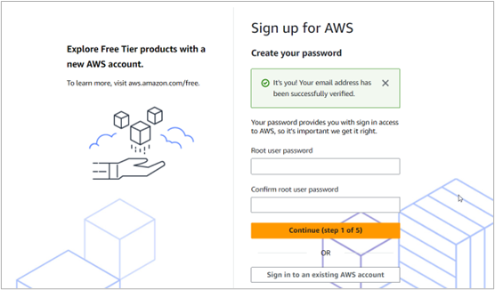
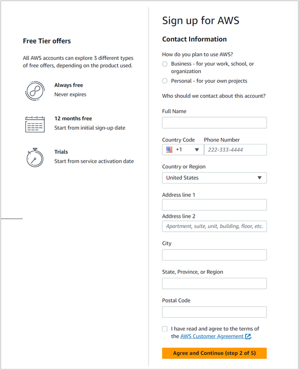
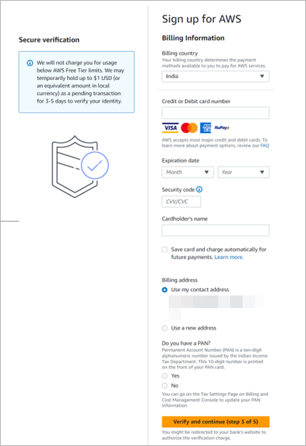
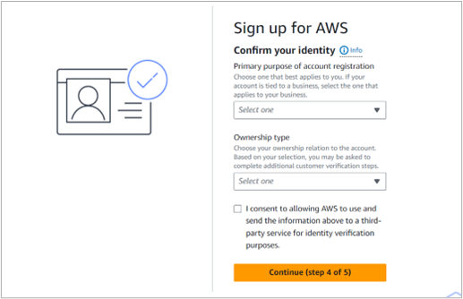
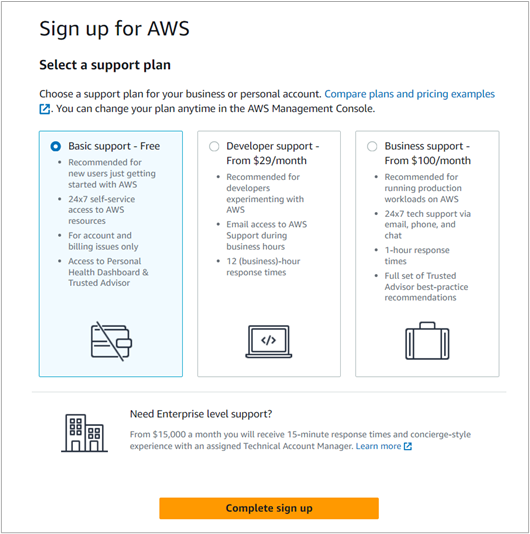

Table of Content
AWS stands for Amazon Web Services. Amazon provides AWS as a cloud computing service. It helps individuals and businesses to store, manage, and access data from anywhere using the internet. It supports creating and running the applications in the cloud with ease. It allows access in mobile and web browsers.
AWS offers a variety of services, including computing, databases, storage, networking, and security. The services and features of AWS make it flexible and user-friendly. AWS uses a subscription model of pay-as-you-go service. It ensures cost efficiency compared to on-premise setups.
This guide is to assist you in getting started with the AWS Cloud application.
Key features
Profile: Create a user profile to manage and store your data and applications in the cloud.
Networking: Build and manage networks to share information and keep data secure.
Compute services: Use cloud virtual servers such as Amazon EC2 to run your projects.
Storage services: Use tools such as Amazon S3 to store your data.
Learning Resources: Learn new skills and knowledge using AWS Training and Certification programs.
To get started with AWS Cloud, you need to log in to the AWS official website on your device. This section covers creating an AWS account and signing in to the Management Console of AWS.
 A process flow diagram to get started with AWS cloud
The process of creating an AWS account involves verifying your email ID and phone number, creating your password and profile, providing contact and billing information, confirming your identity, and selecting a support plan.
Prerequisites:
An Email Address
A Phone Number
A Credit or Debit card
Verify Email Address
AWS needs your email address to ensure security, confirm identity, and provide recovery options for your account.
To verify email address,
Log in to the AWS official site on your device.
In the landing page, select Create an AWS Account.
The Sign up for AWS page is displayed.
Note: You can also select Create a Free Account.

The screenshot of the Sign up for AWS page to verify email address.
In the Root user email address field, enter your email address.
In the AWS account name field, enter a name for your AWS account.
Note: You can change this name in your account settings later.
Select Verify email address.
The Confirm you are you page is displayed.
In the Verification code field, enter the verification code sent to your email address.
Select Verify.
Note: Select Resend Code if you did not receive any verification code.
Your email address is verified and the Create your password page is displayed.
Create Password
AWS needs a password to help you access AWS data and services. It protects your personal information from unauthorized access.
To create your password,

The screenshot of the Sign up for AWS page to create your password.
In the Root user password, enter a password for your AWS account.
Note: Make sure your password contains at least 8 characters with uppercase letters, lowercase letters, numbers, and non-alphanumeric characters.
In the Confirm root user password, enter the same password.
Select Continue (step 1 of 5).
Your AWS password is created and the Contact Information page is displayed.
Provide Contact Information
AWS requires your contact information to verify identity, enable account recovery, and ensure communications for updates and notifications.
To provide your contact information,

The screenshot of the Sign up for AWS page to provide your contact information.
In the How do you plan to use AWS? section, perform one of the following:
Select Business if you plan to use AWS for your work, school, or organization.
Select Personal if you plan to use AWS for your own projects.
In the Who should we contact about this account? section, perform the following steps:
a. In the Full Name field, enter your name.
b. In the Country Code field, select your country code using the drop-down list.
c. In the Phone Number field, enter your phone number.
d. In the Country or Region, select your country using the drop-down list.
e. In the Address line 1 and Address line 2 fields, enter your residential address such as street name, apartment name, floor number and more.
f. In the City field, enter your city name.
g. In the State, Province, or Region field, enter the name accordingly.
h. In the Postal Code, enter the postal code of your address.
In the end, select the checkbox to agree to the terms of AWS.
Note: Make sure to read the AWS Customer Agreement.
Select Agree and Continue (step 2 of 5).
The Billing Information page is displayed.
Provide Billing Information
AWS requires your billing information to process payments, prevent fraudulent activities, and provide smooth access.
To provide billing information,

The screenshot of the Sign up for AWS page to provide your billing information.
In the Billing country field, select your country using the drop-down list.
In the Credit or Debit card number field, enter your credit or debit card number.
In the Expiration date field, select the month and year for the expiration date of your card using the drop-down list.
In the Security code field, enter the three-digit security code of your card.
In the Cardholder's name, enter the name provided in your card.
Note: You can select the checkbox to save your card and charge automatically.
In the Billing address, perform one of the following:
Select Use my contact address if there is no change in the address.
Select Use a new address if you wish to provide a new billing address and enter the prompted details.
In the Do you have a PAN? section, perform one of the following:
Select Yes if you have a PAN and enter your PAN.
Note: You can also provide PAN later.
Select No if you do not have a PAN.
Select Verify and continue (step 3 of 5).
The Confirm your identity page is displayed.
Confirm identity
AWS needs your identity confirmation to verify authenticity, enhance security, and protect data and services.
To confirm your identity,

The screenshot of the Sign up for AWS page to confirm your identity.
In the Primary purpose of account registration field, select your purpose of creating an AWS account using the drop-down list.
Note: For more information about the purpose of account registration, see < >.
In the Ownership type field, select your ownership relation to the account.
A few additional customer verification steps are added to the page.
In the India document type field, select a document type using the drop-down list.
Note: For more information on document type, see < >.
Enter your details in the prompted fields based on your document type.
In the end, select the checkbox to give consent allowing AWS to use and send information for identity verification purposes.
Select Continue (step 4 of 5).
The Confirm your identity page is displayed with options to verify your phone number.
In the How should we send you the verification code? section, perform one of the following:
Select Text message (SMS) If you wish to receive code in a text format.
Select Voice call if you wish to hear the code in an audio format.
In the Country of region code field, select your country code using the drop-down list.
In the Mobile phone number field, enter your phone number and select Send SMS (step 4 of 5).
A Security Verification page is displayed.
In the Type the characters as shown above field, enter captcha and Select Submit.
Note: You can also hear the code using option.
The Verify code page is displayed.
In the Verify code field, enter the verification code sent to your phone number and select Continue (step 4 of 5).
The Select a support plan page is displayed.
Select a Support Plan
AWS needs your support plan to provide access and resources you need based on your requirements for using AWS services.
To select a support plan,

The screenshot of the Sign up for AWS page to select a support plan.
In the Select a support plan page, perform one of the following:
Select Basic support -- Free if you are a new user of AWS.
Select Developer support -- From $29/month if you are a developer experimenting with AWS.
Select Business support -- From $100/month if you are running production workloads on AWS.
Note: For more information on support plans and prices, see < >.
Select Complete sign up.
The Congratulations! page is displayed.
Your AWS account is successfully created.
Signing In to the AWS Management Console provides full access to AWS services and resources in your account. Initially, you must sign in as the root user. The root user is associated with the email address and password used during your account creation.
To sign in as the root user,
Log in to the AWS official website on your device.
In the landing page, select Sign In to the Console.
The Sign in page is displayed.
Select Root user.
In the Root user email address field, enter your email address and select Next.
The Root user sign in page is displayed.
In the Password field, enter your password for the AWS account and select Sign in.
The Keep your account secure page is displayed.
In the Keep your account secure page, perform one of the following:
Enter the prompted details and select Next.
Note: For more information on multi-factor authentication (MFA), see < >.
Select Skip for now if you are not sure.
The Console Home page of AWS is displayed.
Your sign in to the AWS Management Console is successful.